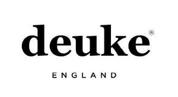

Trade Mark Journal No.2025/010 7 March 2025
UK00004165313 25 February 2025 (18,25)

- Class 18
- Bags for sports clothing; Bags for clothes; Shoe bags; Garment bags; Holdalls for sports clothing; Flexible bags for garments; Shoe bags for travel; Garment bags for travel; Bags (Garment -) for travel.
- Class 25
- Jackets [clothing]; Parts of clothing, footwear and headgear; Clothing; Gloves [clothing]; Gloves as clothing; Headbands [clothing]; Headbands for clothing; Jackets (Stuff -) [clothing]; Stuff jackets [clothing]; Belts [clothing]; Belts for clothing; Aprons [clothing]; Jerseys [clothing]; Jackets being sports clothing; Wristbands [clothing]; Kerchiefs [clothing]; Leather clothing; Clothing of leather; Leather (Clothing of -); Knitwear [clothing]; Woolen clothing; Leather belts [clothing]; Fashion hats; Ready-to-wear clothing; Mitts [clothing]; Quilted jackets [clothing]; Oilskins [clothing]; Collars [clothing]; Muffs [clothing]; Gloves for apparel; Capes (clothing); Shorts [clothing]; Hoods [clothing]; Trunks being clothing; Knitted clothing; Layettes [clothing]; Clothing layettes; Tops [clothing]; Gabardines [clothing]; Clothes; Footwear; Chaps (clothing); Denims [clothing]; Garments for protecting clothing; Bottoms [clothing]; Cashmere clothing; Veils [clothing]; Rainproof clothing; Waterproof clothing; Clothing for horse-riding [other than riding hats]; Sneakers [footwear]; Shoes for leisurewear; Clothing for leisure wear; Belts (Money -) [clothing]; Hats; Sports clothing [other than golf gloves]; Shoes; Clothing for sports.
ATLAS UNION LTD